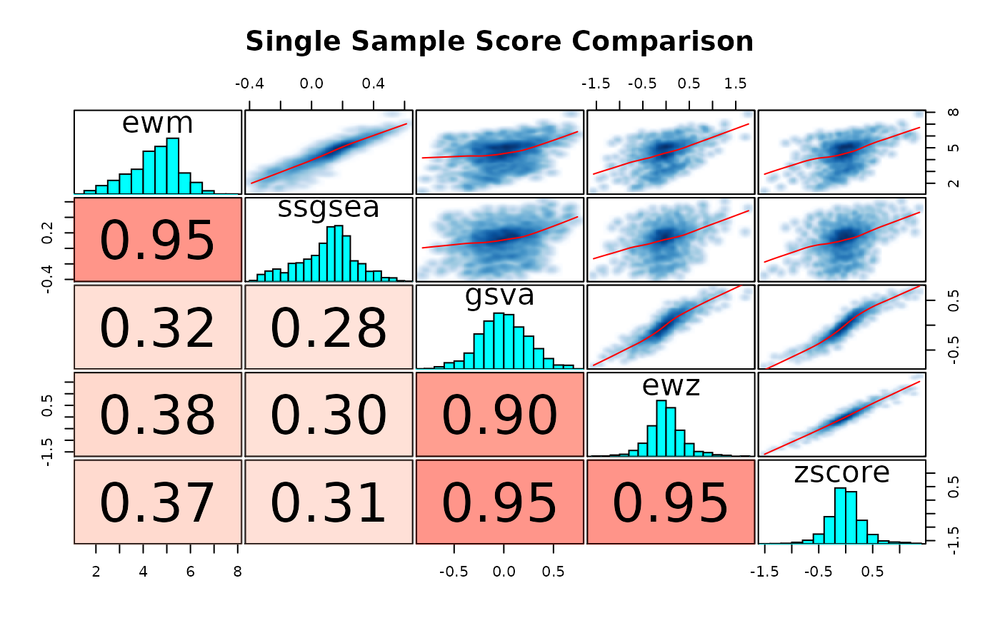
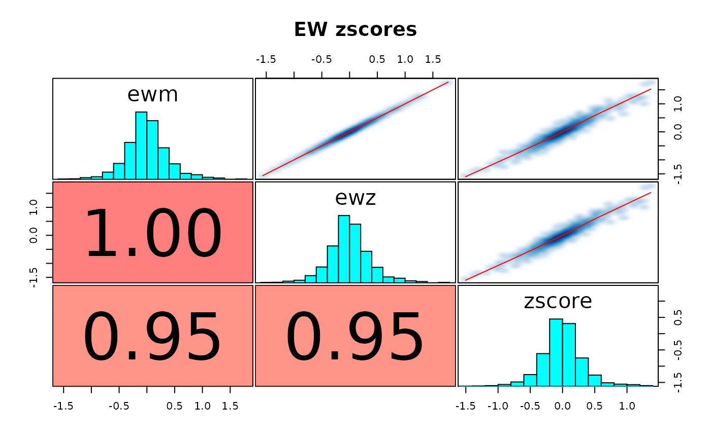

scoreSingleSamples.RdIt is common to assess the activity of a gene set in a given sample. There
are many ways to do that, and this method is analogous to the
multiGSEA() function in that it enables the user to run a multitude of
single-sample-gene-set-scoring algorithms over a target expression matrix
using a GeneSetDb() object.
scoreSingleSamples( gdb, y, methods = "ewm", as.matrix = FALSE, drop.sd = 1e-04, verbose = FALSE, recenter = FALSE, rescale = FALSE, ..., as.dt = FALSE )
| gdb | A GeneSetDb |
|---|---|
| y | An expression matrix to score genesets against |
| methods | A character vector that enumerates the scoring methods you want to run over the samples. Please reference the "Single Sample Scoring Methods" section for more information. |
| as.matrix | Return results as a list of matrices instead of a melted
data.frame? Defaults to |
| drop.sd | Genes with a standard deviation across columns in |
| verbose | make some noise? Defaults to |
| recenter, rescale | If |
| ... | these parameters are passed down into the the individual single sample scoring funcitons to customize them further. |
| as.dt | If |
A long data.frame with sample_id,method,score values per row. If
as.matrix=TRUE, a matrix with as many rows as geneSets(gdb)
and as many columns as ncol(x)
Please refer to the "Generating Single Sample Gene Set Scores" of the multiGSEA vignette for further exposition.
The following methods are currenly provided.
"ewm": The eigenWeightedMean() calculates the fraction each gene
contributes to a pre-specified principal component. These contributions
act as weights over each gene, which are then used in a simple weighted
mean calculation over all the genes in the geneset per sample. This is
similar, in spirit, to the svd/gsdecon method (ie. method = "gsd"``) You can use this method to perform an "eigenweighted" zscore by setting unscaleanduncentertoFALSE. "ewz": with unscaleanduncenterset toFALSE`.
"gsd": This method was first introduced by Jason Hackney in
doi:10.1038/ng.3520. Please refer to
the gsdScore() function for more information.
"ssgsea": Using ssGSEA as implemented in the GSVA package.
"zscore": The features in the expression matrix are rowwise z transformed.
The gene set level score is then calculated by adding up the zscores for
the genes in the gene set, then dividing that number by either the the
size (or its sqaure root (default)) of the gene set.
"mean": Simply take the mean of the values from the expression matrix
that are in the gene set. Right or wrong, sometimes you just want the mean
without transforming the data.
"gsva": The gsva method of GSVA package.
"plage": Using "plage" as implemented in the GSVA package
#> Warning: package ‘reshape2’ was built under R version 4.0.2gdb <- exampleGeneSetDb() vm <- exampleExpressionSet() scores <- scoreSingleSamples( gdb, vm, methods = c("ewm", "ssgsea", "gsva", "ewz", "zscore"), center = TRUE, scale = TRUE, ssgsea.norm = TRUE)#> Warning: The current version of scoreSingleSamples produces *minor* differences in GSVA-based single sample gene set scores. #> https://github.com/lianos/multiGSEA/issues/10#> Warning: The current version of scoreSingleSamples produces *minor* differences in GSVA-based single sample gene set scores. #> https://github.com/lianos/multiGSEA/issues/10sw <- reshape2::dcast(scores, name + sample_id ~ method, value.var='score') corplot(sw[, c("ewm", "ssgsea", "gsva", "ewz", "zscore")], title = "Single Sample Score Comparison")# I think the eigenWeighteZscore is just ewm with un(center|scale) = FALSE zs <- scoreSingleSamples( gdb, vm, methods = c('ewm', 'ewz', 'zscore'), summary = "mean", center = TRUE, scale = TRUE, uncenter = FALSE, unscale = FALSE) zw <- reshape2::dcast(zs, name + sample_id ~ method, value.var='score') corplot(zw[, c("ewm", "ewz", "zscore")], title = "EW zscores")